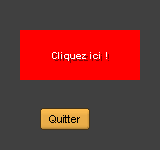
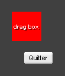
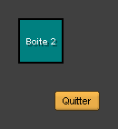
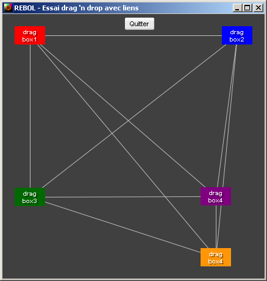
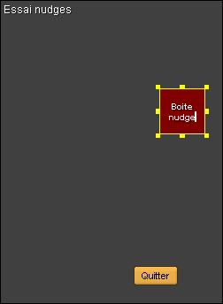
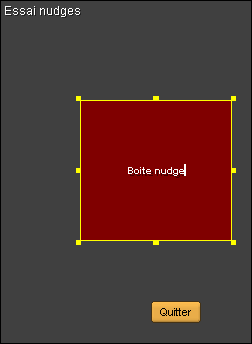
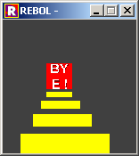

Date
Version
Commentaires
Auteur
6 avril 2005 17:00
1.0.0
Traduction initiale
Philippe Le Goff
lp--legoff--free--fr
Le code suivant implémente le double-clic (d'après l'exemple fourni par DocKimbel) sur son site.
 screen: 150x150 center: screen / 2 dbl-time: 10000 ; gestion du double clic dbl-detect: 200 ; maximum time in ms between 2 clicks double-clic: func [face action event ][ face/rate: 0.01 switch action [ up [ if none? dbl-time [ dbl-time: event/time ] ; if ] ; up down [ if dbl-time [ either (event/time - dbl-time) < dbl-detect [ face/text: "double-clic OK" face/font/size: 14 ][ face/font/size: 10 face/text: "double-clic KO" ] ; either dbl-time: none ] ; if face/data: event/offset do [focus face] ] ; down ];switch sur actions show face ] ; fin func double-clic ; ################### LAYOUT ######################### fenetre-clic-box: layout [ size: screen style clic-box box 120x50 font-size 10 font-name "Courrier" feel [ engage: :double-clic face/rate: 0.1 ] ; fin du feel backcolor coal at 20x30 clic-box "Cliquez ici !" 255.0.0 pad 20x20 btn-enter 50 "Quitter" [ unview/all quit ] ] ; ################### FIN LAYOUT ######################### view/options/title center-face fenetre-clic-box [no-title] "Essai double-clic"
Voici un exemple de code implémentant le drag'n drop. De plus, la boîte est confinée à l'intérieur du cadre.
 screen: 140x140 center: screen / 2 ; ######################### FONCTIONS ######################### ; definition fonction premier-plan qui gére le maintien au premier plan du face premier-plan: func [ face ][ remove find face/parent-face/pane face append face/parent-face/pane face ] ; fin premier-plan ; fin definition premier plan ; deplacement au clavier du face moving: func [ face event ][ face/offset: face/offset + event/offset - face/data face/offset: confine face/offset face/size 0x0 to-pair screen face/text: face/offset ] ; fin moving ; definition des fonctions nécessaires aux evenements dragndrop: func [face action event ][ face/rate: 0.01 switch action [ down [ face/data: event/offset premier-plan face do [focus face] ] ; down over [ moving face event ] ; away [ moving face event ] ];switch sur actions show face ];evtt-ctrl ; ###################### FIN FONCTIONS ######################### ; ###################### MAIN LAYOUT ######################### fenetre-drag-drog: layout [ size: screen style dragndrop-box box 50x50 font-size 10 font-name "Courrier" feel [ engage: :dragndrop face/rate: 0.1 ] ; fin du feel backcolor coal at 20x20 dragndrop-box "drag box" red pad 20x10 btn 50 "Quitter" [ unview/all quit ] ] ; ################### FIN LAYOUT ######################### view/options/title center-face fenetre-drag-drog [no-title] "Essai drag 'n drop"
Il 'agit d'utiliser les touches "up", "down", "left", "rigth" pour déplacer
un widget par exemple dans le cas d'un positionnement au pixel prés.Dans l'exemple ci-dessous, il est possible de déplacer la boîte avec la souris (drag'n'drop),
les fléches du clavier (incrément de 10). De plus, le focus sur la boîte est visualisé par la fonction face-over, qui modifie (+ de luminosité) la couleur de la boîte et met en rouge la bordure. screen: 180x140 center: screen / 2 inc: 10 ; nbre de pixels à l'initilaisation en increment, ; pour les déplacements par le clavier ; ######################### FONCTIONS ######################### ; definition du comportement particulier au passage de la souris face-over: [ feel: make feel [ over: func [face action effect][ face/effect: either action [ [luma 100] ][ [] ] face/edge/color: either action [ red ][ none ] show face ] ; over ] ; feel ] ; face-over ; definition fonction premier-plan qui gére le maintien au premier plan du face premier-plan: func [ face ][ remove find face/parent-face/pane face append face/parent-face/pane face ] ; fin premier-plan ; fin definition premier plan ; deplacement au clavier du face moving: func [ face event ][ face/offset: face/offset + event/offset - face/data face/offset: confine face/offset face/size 0x0 to-pair screen face/text: face/offset ] ; fin moving ; définition des fonctions nécessaires aux événements move-ctrl: func [face action event ][ face/rate: 0.01 switch action [ key [ switch event/key [ up [ face/offset/y: face/offset/y - inc ] down [ face/offset/y: face/offset/y + inc ] left [ face/offset/x: face/offset/x - inc ] right [ face/offset/x: face/offset/x + inc ] ] ; fin switch event/key face/rate: 0.01 ; remarque : le face/offset est la position du coin superieur gauche de la face ; (ici le centre de la boite. Il faut donc vérifier l'adéquation entre ; les bords de la boite principale et les tailes des boites internes face/offset: confine face/offset face/size 0x0 to-pair screen face/text: face/offset ] ; key down [ face/data: event/offset premier-plan face do [focus face] ] ; down over [ moving face event ] away [ moving face event ] ];switch sur actions show face ] ;move-ctrl ; ###################### FIN FONCTIONS ######################### ; ###################### MAIN LAYOUT ######################### fenetre-drag-drog: layout [ size: screen style move-box box 50x50 font-size 10 font-name "Courrier" edge [color: black size: 2x2] feel [ engage: :move-ctrl face/rate: 0.1 ] with face-over ; fin du feel backcolor coal at 20x20 move-box "Boite 2" teal at 60x100 btn-enter 50 "Quitter" [ unview/all quit ] ] ; ################### FIN LAYOUT ######################### view/options/title center-face fenetre-drag-drog [no-title] "Essai move engage"
L'exemple ici correspond à une étude poussée par ma curiosité.
J'ai cherché (l'idée a été suspendues faute de temps !) à réaliser un outil qui me permettrait
de scanner un range d'adresses IP et de faire apparaître une image (d'un ordinateur) dans
une interface graphique, au fur et à mesure du déroulement et des résultats du scan.
L'un des critères était de pouvoir ensuite déplacer ces images à la souris, pour réarranger le schéma.Le code suivant illustre cette possibilité de déplacer à la souris des objets
qui conservent un lien (une ligne les reliant). C'est joli, et fluide, on ne s'en lasse pas.Bien sûr, à partir de ce code, dont une partie est inspirée d'un script de Volker Nitsch, il est possible
d'être créatif et d'imaginer des randoms d'objets, ou la même chose en 3D. screen: 440x440 center: screen / 2 lines: [] ; pour les liens ; fenetre-drag-drog est le nom de la varaible désignant la top-level face ; ------------------ FONCTIONS -------------------------- ; definition fonction premier-plan qui gére le maintien au premier plan du face premier-plan: func [ face ][ remove find face/parent-face/pane face append face/parent-face/pane face ] ; fin premier-plan ; fin definition premier plan ; deplacement au clavier du face moving: func [ face event ][ face/offset: face/offset + event/offset - face/data face/offset: confine face/offset face/size 0x0 to-pair fenetre-drag-drog/size face/text: face/offset ] ; fin moving ;----------------------------------------------------- ;===lines, d'aprés Volker Nitsch =================== find-line: func [face1 face2] [ any [ find/skip lines reduce [face1 face2] 2 find/skip lines reduce [face2 face1] 2 ] ; fin any ] ; fin fonction find-line ; fonction modifiée add-line: func [face1 face2 ] [ if not find-line face1 face2 [repend lines [face1 face2] ] ] ; fin add-line ; fonction pour tracer depuis le barycentre des boites middle: func [face] [ face/size / 2 + face/offset ] draw-line: func [face1 face2] [ repend draw ['line middle face1 middle face2 ] ] ; fin draw-line draw-lines: does [ draw: clear bg/effect/draw foreach [face1 face2] lines [draw-line face1 face2] ] ; fin draw-lines remove-line: func [face1 face2] [ if p: find-line face1 face2 [ remove/part p 2 ] ] ; fin remove-line ;-------------------------------------------------------- ; recherche de styles particuliers : ; recherche le path de la face dans le conteneur parent face-to-index: func [face] [ to-path reduce ['fenetre-drag-drog 'pane index? find fenetre-drag-drog/pane face] ] find-face-style: func [face st /local tmpo tmpo2 f ] [ tmpo: copy [] res-blk: copy [] ; recuperation des elements concernés sur la base du style foreach f face/pane [ if f/style = st [ append tmpo f ] ; fin du if ] foreach fx tmpo [ ; on calcule la seconde série sur la différence entre l'originale sans l'élement courant tmpo2: difference tmpo append [] fx if (length? tmpo2) > 0 [ foreach fy tmpo2 [ repend res-blk [ fx fy ] ; il faut conserver les faces ] ; foreach fy ] ] ; foreach fx res-blk ] ; fin find-face-style ;-------------------------------------------------------- ; definition des fonctions nécessaires aux evenements dragndrop: func [face action event ][ face/rate: 0.01 switch action [ down [ face/data: event/offset premier-plan face do [focus face] ] ; down over [ moving face event draw-lines ] ; away [ moving face event draw-lines ] ];switch sur actions show [bg face] ] ; fin dragndrop ; ------------------- FIN FONCTIONS ----------------------------- ; --------------------- MAIN LAYOUT ------------------------------ fenetre-drag-drog: center-face layout [ size: screen style dragndrop-box box 50x30 font-size 10 font-name "Courrier" feel [ engage: :dragndrop face/rate: 0.1 ] ; fin du feel dragndrop-box bg: backdrop coal effect [ draw [] ] at 20x20 dragndrop-box "drag box1" red at 360x20 dragndrop-box "drag box2" blue at 20x285 dragndrop-box "drag box3" green - 150 at 325x284 dragndrop-box "drag box4" purple at 325x384 dragndrop-box "drag box4" orange pad 20x10 at 200x5 btn 50 "Quitter" [ unview/all quit ] ] ; --------------------- FIN MAIN LAYOUT ------------------------------ ; liste-elements-dragndrop-box contiendra les faces de style 'dragndrop-box liste-elements-dragndrop-box: find-face-style fenetre-drag-drog 'dragndrop-box foreach [f1 f2] liste-elements-dragndrop-box [ add-line f1 f2 ] ; sinon faire l'ajout add-line, élements par éléments. draw-lines insert-event-func [if 'resize = event/type [bg/size: fenetre-drag-drog/size show bg] event] view/options/title fenetre-drag-drog [resize] "Essai drag 'n drop avec liens"Et voilà !
L'exemple suivant illustre l'usage des "nudges", des poignées, permettant d'ajuster la taille de la forme. Le code est extrait d'un script de Carl Sassenrath. Le principe en est le suivant : lorsqu'on sélectionne la 'box servant de modèle, des poignées (nudges) apparaissent et permettent de redimensionner la boîte et le texte qu'elle contient. A la sélection de la boîte, la variable this-face est définie, la plupart des fonctions (update, hide,…) s'effectuent avec cette variable. Quelques caractéristiques génériques (taille, couleur des poignées, ..) peuvent être définies.
A l'initialisation
Avec activation des nudges
 
REBOL[ Title: "Nudges" Date: 10-Dec-2004 Version: 1.0.0 File: %nudges.r Author: "Philippe Le Goff /" Purpose: "experiments with View" Email: %lp--legoff--free--fr note: { v. 1.0.0 : experiments on a code from Carl} library: [ level: 'beginner platform: all type: 'tool domain: [tool] tested-under: none support: none license: none see-also: none ] ] ; code pour gérer des widgets redimensionnables screen: 340x340 center: screen / 2 nub-size: 5x5 nub-color: yellow stickyness: 5x5 nudge-size: 1x1 this-face: none grid-snap: 5x5 face-hold: none layout-window: none nub-size2: 2 * nub-size nub-face: make get-style 'face [ edge: make edge [color: nub-color effect: 'nubs size: nub-size] color: font: para: text: none start: 0x0 ; starting point - where the down happened code: [] ; code to do based on where the down happened xy: none ; current offset stuck: on feel: make feel [ engage: func [face act event][ ; face is set to NONE when the event started out on real face if none? this-face [exit] xy: event/offset ; debug : print [xy event/type act] if not face [xy: xy + nub-size] ; started out on real face if find [over away] act [ if all [ stuck stickyness/x > abs xy/x - start/x stickyness/y > abs xy/y - start/y ][exit] stuck: off do code size: max size nub-size * 2 + 1x1 ; allow only to get this small this-face/offset: offset + nub-size this-face/size: size - nub-size2 this-face/line-list: none show [ this-face nub-face ] ] if act = 'down [ ;-- Show nubs and setup for an over or away event: clear code ; remove previous code start: xy ; starting point stuck: on ;-- Compose code to handle resizing drag on corners: foreach [cond op] [ [start/x < edge/size/x] [offset/x: offset/x + xy/x size/x: size/x - xy/x] [start/y < edge/size/y] [offset/y: offset/y + xy/y size/y: size/y - xy/y] [size/x - edge/size/x < start/x] [size/x: xy/x] [size/y - edge/size/y < start/y] [size/y: xy/y] ;> ][if do cond [append code op]] ;-- If none, then must be a face drag condition: if empty? code [insert code [offset: offset + nub-size + xy - start / grid-snap * grid-snap - nub-size]] ; If the face has text, prepare for editing. if string? this-face/text [ system/view/focal-face: this-face system/view/caret: tail this-face/text show this-face ] ] ] ] ] place-nubs: func [face][ nub-face/offset: face/offset - nub-size nub-face/size: face/size + nub-size2 ] show-nubs: func [face] [ ; set face values, update the pane, show the nubs dirty: true place-nubs face if not find layout-window/pane nub-face [ append layout-window/pane nub-face ] show layout-window ] hide-nubs: does [ if this-face [ remove any [find layout-window/pane nub-face ""] show layout-window this-face: none ] ] update-nubs: does [ hold: this-face hide-nubs show-nubs hold ] update-face: does [ update-nubs show this-face ] ; ################### FIN GRAPHE / LAYOUTS ######################### layout-window: layout [ size: screen backcolor coal at 180x100 box maroon "Boite nudge" 50x50 font-size 10 font-name "Courrier" feel [ engage: func [ face act evt ][ if act = 'down [ show-nubs face this-face: face ] if this-face [ remove find layout-window/pane this-face append layout-window/pane this-face nub-face/feel/engage none act evt ] ] ; fin engage face/rate: none ] at 150x300 btn-enter 50 "Quitter" [ unview/all quit ] ] ; fin layout ; ################### FIN LAYOUT ######################### view/options/title center-face layout-window [no-title] "Essai nudges"
Le code suivant montre un rectangle rouge qui diminue avec le temps en taille. Ce code est librement inspiré d'un autre sur la librairie RT (auteur "Anton" Rolls ?)
 fenetre: center-face layout [ size 150x210 backcolor coal at 30x20 test: image red "BYE !" font-size 30 rate 10 feel [ engage: func [face action evt][ if action = 'time [ delta: face/size - (face/size * 0.95) print delta face/size: face/size - delta face/offset: face/offset + (delta / 2) face/text: none ;{(on diminue la taille ;fait un effet de reduction à l'infini) } show fenetre ] ] ; fin engage ] ; fin feel pad 0x30 box yellow ] ; fin fenetre ; ---- affichage ------ view fenetre
Le code suivant montre un bouton qui clignote ("blink") : ici les couleurs sont adaptées et on utilise le "rate"
view layout [ button "Alert!" orange red with [rate: 4] [quit] ]